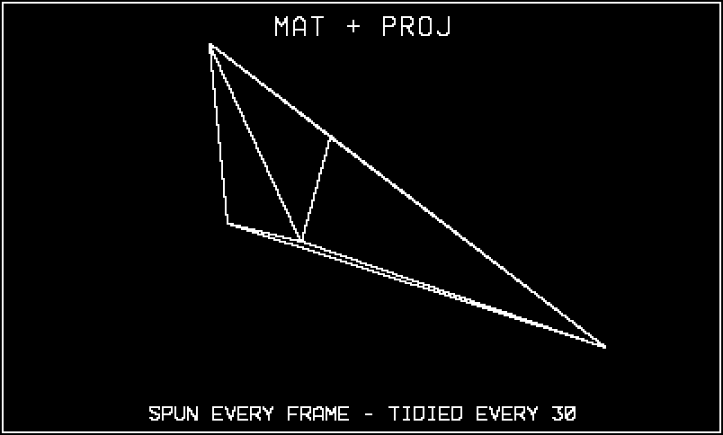
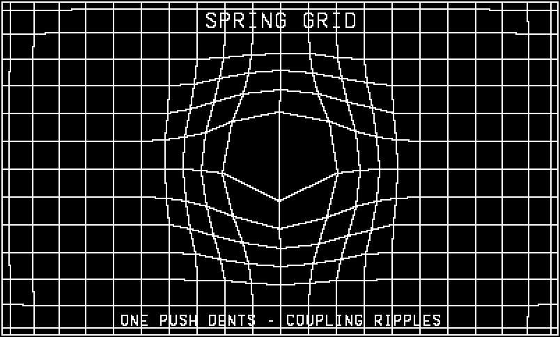
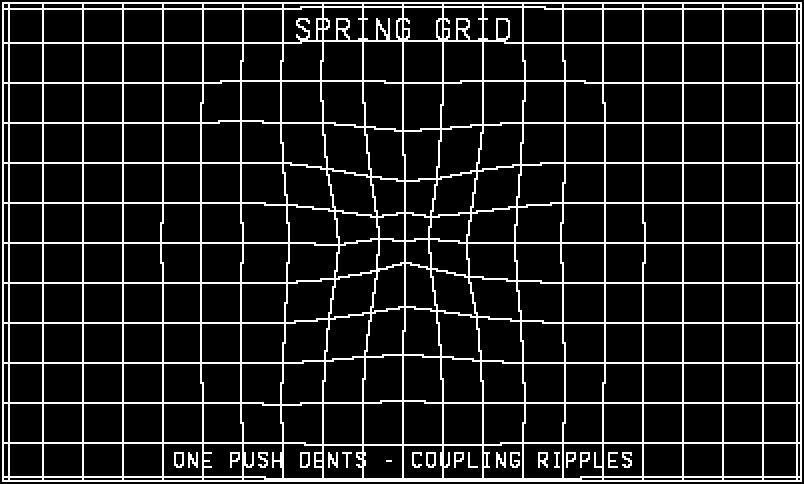
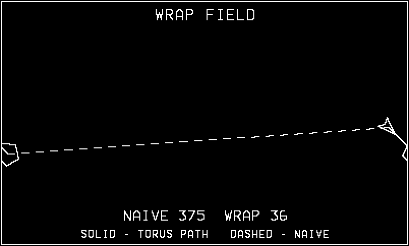
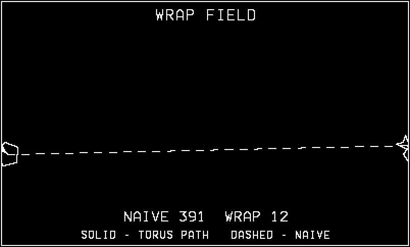
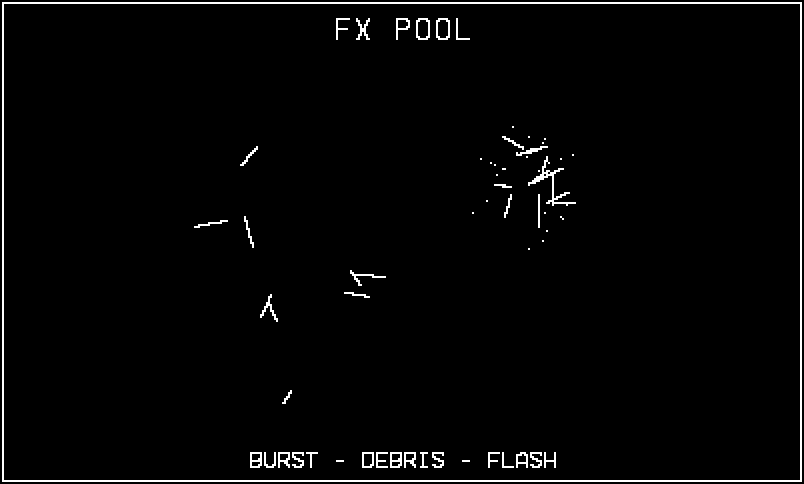

21 Inside Phosphor: A Vector Engine
Sixteen of the case-study games — an Asteroids, a Tempest, a Lunar Lander, an Elite, a Geometry Wars, and eleven more — are one package, Phosphor, and they share one engine: vec/, eleven modules plus a one-import shim, 1,054 lines in all. There are no sprites, no images, no raster fonts anywhere in the package. Every rock, ship, ripple, letter, and explosion is playdate.graphics.drawLine, white on black, the way the vector cabinets drew. That is the design thesis in one sentence: everything is lines. Accept it and a cascade of good things follows — one aesthetic that never clashes with itself, zero asset pipeline, models you can generate in code, text that scales to any size, and per-game code thin enough that the smallest game in the package is a few hundred lines on top of the library.
Earlier chapters borrowed pieces of this engine when they were the best illustration going: Chapter 8 quoted its projection and matrices, Chapter 15 its particle pool, Chapter 17 its high-score cabinet. This chapter walks the whole thing as a system — the mathematics each module implements (for real, with derivations that match the shipped lines), the engineering choices that keep it fast on the device, and then a tour of all sixteen games with an eye to which modules each one leans on and the one clever thing it does with them.
It is the first of five such tours. Part VII reads the fleet’s five shipped engines end to end, one per chapter, each owning a different thesis about what a game is made of: Phosphor owns lines (here), Tiles owns the grid (Chapter 22), Voxel owns volume (Chapter 23), Dither owns shade (Chapter 24), and Lore owns story state over a world (Chapter 25). They are best read as a set — the theses differ, but the cabinet, the discipline, and the harness underneath them are the same ones this book has been teaching since Chapter 1, and seeing that skeleton wearing five different skins is half the point.
The example, 21-phosphor, is an engine tour: the eight core vec/ modules vendored verbatim into the example’s source (each file carries a one-line provenance header; the code is otherwise untouched), driven by a demo that cycles four screens — the warping spring grid taking an impulse, a full-attitude wireframe spin, the wrap-aware playfield with its shortest-path arithmetic drawn on screen, and the effects pool mid-explosion. Every listing in the mathematics sections below is extracted from those vendored files, so the formulas and the code cannot drift apart.
21.1 One library, sixteen cabinets
Phosphor has no framework and no build system beyond pdc. Its Makefile stages a game — copies vec/*.lua and games/<name>/* into one flat directory and compiles that — so at runtime every module is imported by bare name and executes once into the shared global environment. Each file defines exactly one global table (Vec, Field, Grid, Shapes, Mat, Proj, Beams, Fx, Sfx, Attract, Harness), the module-per-concern convention this book’s multi-file examples have used since Chapter 8 — Phosphor is where that convention was hardened. A game’s main.lua begins with import "lib", a one-liner that pulls the library in dependency order. The example’s version is the same list with the book’s scaffolding in front:
import "CoreLibs/graphics"
import "shots"
import "bookharness"
-- the vendored engine, in vec/lib.lua's dependency order
import "vec"
import "field"
import "grid"
import "shapes"
import "mat"
import "proj"
import "beams"
import "fx"Order matters twice over: field must precede grid (the lattice sizes itself to Field.W), and everything must precede a game that calls it. The other package-wide constants are the ones this book has assumed all along, because they came from here: 30 frames per second and a fixed dt of 1/30. Nothing in Phosphor reads a clock; every formula below takes \(\Delta t\) as a constant, which is what makes the harness’s unthrottled, frame-indexed smoke runs (Chapter 18) exactly reproducible.
The demo’s own loop is a four-entry screen table stepped by frame count — each screen gets 90 frames, scripted input arrives through the standard seam, and a human player can fire the same actions with A:
function playdate.update()
local act = Harness.input(frame)
if not act then
local a = playdate.buttonJustPressed(
playdate.kButtonA)
act = { push = a, boom = a }
end
local scr = (math.floor((frame - 1) / 90)
% #screens) + 1
local t = (frame - 1) % 90
if scr ~= lastScr then
lastScr = scr
if screens[scr].enter then screens[scr].enter() end
end
screens[scr].update(t, act)
drawFrame(scr, t)
end21.2 The mathematics of beams
An engine this small can be understood completely, and it is worth doing: each module is one or two pieces of real mathematics implemented without ceremony. This section derives them in the order the library loads.
21.2.1 Vectors as plain numbers
vec.lua is 2D vector algebra with no vector objects — every function takes and returns plain numbers, so transforming a thousand points allocates nothing (the argument made in Chapter 8, and the reason the whole package generates almost no garbage):
function Vec.len(x, y)
return math.sqrt(x * x + y * y)
end
function Vec.norm(x, y)
local l = Vec.len(x, y)
if l < 1e-6 then return 0, 0, 0 end
return x / l, y / l, l
end
-- NOTE: Vec.rot alone takes RADIANS; every other Vec angle API is in
-- degrees. Prefer Vec.rotDeg unless you already have radians in hand.
function Vec.rot(x, y, rad)
local c, s = math.cos(rad), math.sin(rad)
return x * c - y * s, x * s + y * c
end
function Vec.rotDeg(x, y, deg)
return Vec.rot(x, y, math.rad(deg))
endVec.len and Vec.norm are the Euclidean norm \(\lVert\mathbf{v}\rVert = \sqrt{x^2+y^2}\) and its unit vector — note norm returns the length as a third value, because nearly every caller wants both and computing it twice would double the square roots. Vec.rot is the 2D rotation
\[ \begin{pmatrix}x'\\y'\end{pmatrix} = \begin{pmatrix}\cos\theta & -\sin\theta\\ \sin\theta & \cos\theta\end{pmatrix} \begin{pmatrix}x\\y\end{pmatrix}, \]
the \(3{\times}3\) matrices of mat.lua cut down to the plane. Note the shouting comment above it: Vec.rot is the one angle API in the library that takes radians, on an otherwise degree-facing surface, and that inconsistency caused enough double-converted bugs in game code that a review pass gave it both the warning and a Vec.rotDeg twin. When one function in a module breaks the module’s own convention, either fix it or label it loudly — silence is the only wrong choice. The remaining angle helpers convert between the degree-facing surface and the radians underneath:
function Vec.fromAngle(deg, mag)
local rad = math.rad(deg)
return math.cos(rad) * (mag or 1), math.sin(rad) * (mag or 1)
end
function Vec.angleOf(x, y)
return math.deg(math.atan(y, x))
end
-- shortest signed difference between two angles, degrees
function Vec.angleDiff(from, to)
return (to - from + 540) % 360 - 180
endVec.angleDiff deserves its one line of fame. The naive difference to - from can answer 350° when the short way round is −10°, and every chase AI written on top of it will pirouette at the seam. The expression \(((t - f + 540) \bmod 360) - 180\) shifts the difference into a range where the modulo folds it, then shifts back, mapping any pair of angles to the signed shortest difference in \((-180, 180]\). This is the angular version of the torus metric coming in field.lua, and the package uses it everywhere a thing turns toward another thing.
Motion throughout the engine and the games is fixed-step semi-implicit Euler: update velocity from acceleration first, then update position with the new velocity,
\[ \mathbf{v}_{n+1} = \gamma\,(\mathbf{v}_n + \mathbf{a}_n\,\Delta t), \qquad \mathbf{x}_{n+1} = \mathbf{x}_n + \mathbf{v}_{n+1}\,\Delta t, \]
with \(\Delta t = 1/30\) and \(\gamma\) a per-frame damping factor (1 when a system is undamped). You will see this exact shape in the grid update below — nvx = (vx[i] + ax * dt) * DAMP then nx = px[i] + nvx * dt — and in every ship in the package. The ordering is not pedantry. Explicit Euler (position updated with the old velocity) systematically injects energy into oscillating systems: for an undamped spring each step multiplies the state’s amplitude by \(\sqrt{1+\omega^2\Delta t^2} > 1\), so orbits and springs spiral outward until they explode. The semi-implicit variant is symplectic — its energy error stays bounded — which is why a lattice of several hundred coupled springs can run all day at 30 fps with a modest damping term instead of a numerical straitjacket.
21.2.2 Rotation matrices, and keeping them honest
mat.lua packages 3D orientation as flat, row-major 9-element arrays. The three axis rotations are the standard right-handed forms, built exactly as written:
\[ R_x(\theta)=\begin{pmatrix}1&0&0\\[2pt] 0&\cos\theta&-\sin\theta\\[2pt] 0&\sin\theta&\cos\theta\end{pmatrix} \quad R_y(\theta)=\begin{pmatrix}\cos\theta&0&\sin\theta\\[2pt] 0&1&0\\[2pt] -\sin\theta&0&\cos\theta\end{pmatrix} \quad R_z(\theta)=\begin{pmatrix}\cos\theta&-\sin\theta&0\\[2pt] \sin\theta&\cos\theta&0\\[2pt] 0&0&1\end{pmatrix} \]
-- rotation matrices (right-handed, angle in radians) about each parent
-- axis; pass `out` to fill a reusable table instead of allocating
function Mat.rx(t, out)
local s, c = math.sin(t), math.cos(t)
if not out then return { 1, 0, 0, 0, c, -s, 0, s, c } end
out[1], out[2], out[3] = 1, 0, 0
out[4], out[5], out[6] = 0, c, -s
out[7], out[8], out[9] = 0, s, c
return out
end
function Mat.ry(t, out)
local s, c = math.sin(t), math.cos(t)
if not out then return { c, 0, s, 0, 1, 0, -s, 0, c } end
out[1], out[2], out[3] = c, 0, s
out[4], out[5], out[6] = 0, 1, 0
out[7], out[8], out[9] = -s, 0, c
return out
end
function Mat.rz(t, out)
local s, c = math.sin(t), math.cos(t)
if not out then return { c, -s, 0, s, c, 0, 0, 0, 1 } end
out[1], out[2], out[3] = c, -s, 0
out[4], out[5], out[6] = s, c, 0
out[7], out[8], out[9] = 0, 0, 1
return out
end
-- premultiply m by a rotation about a parent axis: returns rot(t) * m, i.e. the
-- orientation after rotating it by t in the parent frame. Pitch is rx, roll rz.
local spinTmp = {}
function Mat.spinX(m, t, out) return Mat.mul(Mat.rx(t, spinTmp), m, out) end
function Mat.spinY(m, t, out) return Mat.mul(Mat.ry(t, spinTmp), m, out) end
function Mat.spinZ(m, t, out) return Mat.mul(Mat.rz(t, spinTmp), m, out) endThe convention that makes the whole module legible is stated in its header: read column \(j\) of \(M\) as the object’s local axis \(j\) expressed in the parent frame, so column 3 is where the object’s nose points, and a local vector becomes a parent vector by \(\mathbf{p} = M\,\mathbf{l}\) (Mat.mulVec). The spin helpers premultiply — \(M' = R(\theta)\,M\) — which rotates the object about a parent axis: crank a Playdate’s roll and the ship rolls about the world’s forward axis regardless of its current attitude. Compose the other way, \(M\,R(\theta)\), and you would rotate about the object’s own axis instead. Both are legitimate; the engine picks parent-frame spins because that is what flight controls feel like.
The optional out parameters running through the listing are the zero-allocation discipline applied to matrices. A fleet of tumbling ships spins its matrices every frame, and each spin used to make two fresh 9-element tables — one for the rotation, one for the product. Now the rotation lands in the module-local spinTmp and the product can land wherever the caller says, including on top of an input:
-- matrix product a*b (both 9-arrays). Allocates a new 9-array unless an
-- `out` table is supplied; products land in locals first, so out may
-- alias a or b (`Mat.mul(R, o.m, o.m)` is safe).
function Mat.mul(a, b, out)
local m1 = a[1] * b[1] + a[2] * b[4] + a[3] * b[7]
local m2 = a[1] * b[2] + a[2] * b[5] + a[3] * b[8]
local m3 = a[1] * b[3] + a[2] * b[6] + a[3] * b[9]
local m4 = a[4] * b[1] + a[5] * b[4] + a[6] * b[7]
local m5 = a[4] * b[2] + a[5] * b[5] + a[6] * b[8]
local m6 = a[4] * b[3] + a[5] * b[6] + a[6] * b[9]
local m7 = a[7] * b[1] + a[8] * b[4] + a[9] * b[7]
local m8 = a[7] * b[2] + a[8] * b[5] + a[9] * b[8]
local m9 = a[7] * b[3] + a[8] * b[6] + a[9] * b[9]
if not out then
return { m1, m2, m3, m4, m5, m6, m7, m8, m9 }
end
out[1], out[2], out[3] = m1, m2, m3
out[4], out[5], out[6] = m4, m5, m6
out[7], out[8], out[9] = m7, m8, m9
return out
endAll nine entries are computed into locals before a single one is written to out, so Mat.mul(R, o.m, o.m) — and therefore Mat.spinY(m, t, m), spinning a matrix in place — is safe. That ordering is the entire trick; write out[1] before reading b[1] and every aliased call silently corrupts its own product. The example’s second screen spins its matrix exactly this way, Mat.spinY(M, 0.031, M), allocating nothing per frame.
Now the drift argument. A free-tumbling object updates its matrix incrementally — sixty small products a second, forever. Every Mat.mul performs 27 multiplications and 18 additions in floating point, each rounding its result; the product of two exactly orthonormal matrices is orthonormal, but the product of two almost orthonormal matrices is slightly less so, and the errors compound multiplicatively, on the order of \((1+\varepsilon)^n\) after \(n\) frames. Nothing corrects them: a matrix does not know it is supposed to be a rotation. After minutes of play the columns are no longer unit length or mutually perpendicular and the model visibly shears and breathes. The fix — run occasionally, not every frame — is Gram–Schmidt re-orthonormalization, which the code credits under its 1984 name:
-- Re-orthonormalize to shed the rounding drift that accumulates when a matrix
-- is spun every frame (Elite's TIDY). Gram-Schmidt anchored on column 3 (nose).
function Mat.tidy(m)
-- nose = column 3
local nx, ny, nz = m[3], m[6], m[9]
local nl = math.sqrt(nx * nx + ny * ny + nz * nz)
if nl < 1e-6 then return Mat.identity() end
nx, ny, nz = nx / nl, ny / nl, nz / nl
-- right = column 1, made orthogonal to nose
local rx, ry, rz = m[1], m[4], m[7]
local d = rx * nx + ry * ny + rz * nz
rx, ry, rz = rx - d * nx, ry - d * ny, rz - d * nz
local rl = math.sqrt(rx * rx + ry * ry + rz * rz)
if rl < 1e-6 then return Mat.identity() end
rx, ry, rz = rx / rl, ry / rl, rz / rl
-- up = nose x right (column 2)
local ux = ny * rz - nz * ry
local uy = nz * rx - nx * rz
local uz = nx * ry - ny * rx
return { rx, ux, nx, ry, uy, ny, rz, uz, nz }
endAnchored on the nose \(\mathbf{n}\) (column 3) because that is the axis whose direction gameplay cares about most, it computes
\[ \hat{\mathbf{n}} = \frac{\mathbf{n}}{\lVert\mathbf{n}\rVert}, \qquad \mathbf{r}' = \mathbf{r} - (\mathbf{r}\cdot\hat{\mathbf{n}})\, \hat{\mathbf{n}}, \qquad \hat{\mathbf{u}} = \hat{\mathbf{n}} \times \hat{\mathbf{r}}', \]
— normalize the nose, strip the nose-component out of the right vector and normalize what is left, then rebuild up as a cross product, which is orthogonal to both by construction. The result is exactly orthonormal again, and at most a hair away from the matrix that drifted, so the correction is invisible on screen. Elite’s original 6502 source called this routine TIDY and ran it once per few seconds; Phosphor’s Elite calls Mat.tidy every time an AI adjusts a ship’s nose, and the example’s second screen spins a matrix incrementally and tidies every 30 frames (Figure 21.1).
Skipping tidy does not fail fast. A spun matrix looks perfect for a minute or two, then models start to lean, then to flatten — and by then the bug report says “ships go weird after a while”, which is nobody’s favorite repro. If an orientation matrix in your game is ever updated from its own previous value, schedule re-orthonormalization from day one. If your state is two or three angles and you rebuild the matrix from them each frame (as Chapter 8’s example does), you are drift-free by construction and tidy is unnecessary — rebuilding beats repairing whenever your state allows it.
21.2.3 Perspective, from similar triangles to the near plane
Chapter 8 stated the projection; here is the two-line derivation, because this chapter owns it. Put the camera at the origin looking down \(+z\), and an image plane at distance \(f\) in front of it. A point at camera-space \((x, y, z)\) projects along the ray to the origin; the triangle with legs \(x\) and \(z\) is similar to the one with legs \(x'\) and \(f\), so
\[ \frac{x'}{f} = \frac{x}{z} \quad\Rightarrow\quad x' = \frac{f\,x}{z}, \qquad y' = \frac{f\,y}{z}. \]
Add the screen center, flip \(y\) (screens grow downward), and that is Proj.point in its entirety — one guard, one divide, two multiply-adds:
-- returns sx, sy, depth or nil when behind the near plane
function Proj.point(wx, wy, wz)
local x, y, z = toCam(wx, wy, wz)
if z < Proj.near then return nil end
local k = Proj.focal / z
return Proj.cx + x * k, Proj.cy - y * k, z
endtoCam upstream subtracts the camera position and applies yaw about \(Y\) then pitch about \(X\) — the two Vec.rot-shaped pairs are rows of \(R_x(\phi)\,R_y(\psi)\) unrolled with the camera’s sines and cosines precomputed once per frame in Proj.setCamera:
-- world -> camera space
local function toCam(wx, wy, wz)
local x, y, z = wx - cam.x, wy - cam.y, wz - cam.z
-- yaw about Y
local xz = x * cam.cosy - z * cam.siny
local zz = x * cam.siny + z * cam.cosy
-- pitch about X
local yz = y * cam.cosp - zz * cam.sinp
zz = y * cam.sinp + zz * cam.cosp
return xz, yz, zz
endThe interesting mathematics is at the near plane. The naive guard — skip points with \(z < z_{near}\) — drops whole edges, and first-person games cannot live with that: drive past an obstacle in Treadline and its nearest edge legitimately crosses the camera plane while its far end is still in view. The edge must be cut at the plane. Parameterize it as \(P(t) = A + t\,(B - A)\) for \(t \in [0,1]\); its depth is linear in \(t\), so the crossing point solves \(z_A + t\,(z_B - z_A) = n\):
\[ t = \frac{n - z_A}{\,z_B - z_A\,}. \]
Substitute that \(t\) into the \(x\) and \(y\) components and you have the visible fragment’s new endpoint, sitting exactly on the plane where its projected position is finite and honest:
-- draw a world-space line with near-plane clipping
function Proj.line(x1, y1, z1, x2, y2, z2)
local ax, ay, az = toCam(x1, y1, z1)
local bx, by, bz = toCam(x2, y2, z2)
local n = Proj.near
if az < n and bz < n then return end
if az < n then
local t = (n - az) / (bz - az)
ax, ay, az = ax + (bx - ax) * t, ay + (by - ay) * t, n
elseif bz < n then
local t = (n - bz) / (az - bz)
bx, by, bz = bx + (ax - bx) * t, by + (ay - by) * t, n
end
local ka, kb = Proj.focal / az, Proj.focal / bz
gfx.drawLine(Proj.cx + ax * ka, Proj.cy - ay * ka,
Proj.cx + bx * kb, Proj.cy - by * kb)
endThree cases, in order: both endpoints behind — nothing to draw; \(A\) behind — move \(A\) up to the plane; \(B\) behind — likewise. Note each endpoint then gets its own scale factor ka, kb: the two ends of a line are at different depths and project with different magnifications. Interpolating in screen space instead (project first, clip after) is the classic wrong answer — perspective projection does not preserve ratios along a line, and screen-space clipping visibly bends geometry near the camera.
On top of Proj.line sit two model drawers. Proj.model handles yaw-only objects (buildings, tanks — things that stand upright), rotating each polyline vertex about \(Y\) inline. Proj.mesh is the full-attitude version — indexed vertices, an orientation matrix, and a deliberate contract: the camera stays at the origin and the universe moves, which is how a space game keeps the player’s ship mathematically trivial:
-- Draw a wireframe mesh at full attitude. verts is a flat model-space array
-- {x1,y1,z1, x2,y2,z2, ...}; edges is a flat 1-based index-pair array
-- {a1,b1, a2,b2, ...}; pos is the object position {x,y,z}; m is a Mat
-- orientation (object -> world, nil = identity); scale multiplies the model.
-- Expects the camera at the origin looking down +Z (Proj.setCamera(0,0,0,0,0)),
-- which is how free-flight games keep the player fixed and move the universe.
local mx, my, mz = {}, {}, {} -- transformed-vertex scratch, reused per call
function Proj.mesh(verts, edges, pos, m, scale)
scale = scale or 1
local ox, oy, oz = pos.x, pos.y, pos.z
local n = #verts
local vi = 0
for i = 1, n - 2, 3 do
local x, y, z = verts[i] * scale, verts[i + 1] * scale, verts[i + 2] * scale
if m then x, y, z = Mat.mulVec(m, x, y, z) end
vi = vi + 1
mx[vi], my[vi], mz[vi] = ox + x, oy + y, oz + z
end
for i = 1, #edges - 1, 2 do
local a, b = edges[i], edges[i + 1]
-- guard: the scratch persists across calls, so an edge index
-- beyond this model's verts would silently draw a leftover
-- vertex from a previously drawn mesh
if a <= vi and b <= vi then
Proj.line(mx[a], my[a], mz[a], mx[b], my[b], mz[b])
end
end
endThree engineering notes hiding in a dozen lines. The scratch arrays mx, my, mz live at module scope and are reused by every call — the zero-allocation habit again (Chapter 19) — and each vertex is transformed exactly once even though it may appear in six edges. The third note is the guard in the edge loop, and it is scar tissue worth reading twice: because the scratch persists across calls, a model with one typo’d edge index used to reach past its own vertices and pick up a stale vertex from whatever mesh drew previously — a phantom line to somewhere plausible, on screen, sixty times a second, with every counter healthy. It is exactly the class of bug Chapter 18 warns that heartbeats cannot catch (only eyes, or a review, can), and the fix is the cheapest kind: refuse indices beyond this call’s vi, so a bad model draws less, visibly, instead of drawing wrong, plausibly. The example’s second screen draws a five-vertex dart through this path, spinning in place via Mat.spinY(M, t, M) with a tidy every 30 frames, and prints its HUD with Beams (Figure 21.1).

Proj.mesh, orientation spun incrementally every frame and re-orthonormalized every thirty. The heading and caption are Beams stroke text, not a font.
21.2.4 The spring grid
grid.lua is the module people ask about first, because its output looks expensive: the warping lattice under Geometry Wars-style shooters, denting away from explosions and rippling back. It is a few hundred damped springs and one clean idea. Each lattice point \(i\) has a fixed home \(\mathbf{h}_i\), a current position \(\mathbf{p}_i\), and a velocity; each frame it feels two forces — a weak spring pulling it home, and a stronger coupling pulling it toward the average of its four neighbors:
\[ \mathbf{a}_i = k\,(\mathbf{h}_i - \mathbf{p}_i) + \kappa \Bigl( \frac{1}{|N_i|} \sum_{j \in N_i} \mathbf{p}_j - \mathbf{p}_i \Bigr), \]
with \(k = 26\,\mathrm{s}^{-2}\) (STIFF) and \(\kappa =
70\,\mathrm{s}^{-2}\) (COUPLE) by default. The second term is the discrete Laplacian of the displacement field, which is precisely the spatial operator of the wave equation — that is why a dent ripples outward instead of staying put. The first term is Hooke’s law toward home, which is why the ripples eventually flatten back to a straight grid rather than sloshing forever. Integration is the semi-implicit update from earlier with \(\gamma = 0.88\) per frame:
function Grid.update(dt)
for r = 0, rows - 1 do
for c = 0, cols - 1 do
local i = idx(c, r)
-- neighbour average (Laplacian smoothing → ripples travel)
local sx, sy, n = 0, 0, 0
if c > 0 then local j = i - 1; sx, sy, n = sx + px[j], sy + py[j], n + 1 end
if c < cols - 1 then local j = i + 1; sx, sy, n = sx + px[j], sy + py[j], n + 1 end
if r > 0 then local j = i - cols; sx, sy, n = sx + px[j], sy + py[j], n + 1 end
if r < rows - 1 then local j = i + cols; sx, sy, n = sx + px[j], sy + py[j], n + 1 end
local ax = STIFF * (hx[i] - px[i])
local ay = STIFF * (hy[i] - py[i])
if n > 0 then
ax = ax + COUPLE * (sx / n - px[i])
ay = ay + COUPLE * (sy / n - py[i])
end
local nvx = (vx[i] + ax * dt) * DAMP
local nvy = (vy[i] + ay * dt) * DAMP
local nx = px[i] + nvx * dt
local ny = py[i] + nvy * dt
-- clamp how far a point may stray so a wild force can't explode it
local dx, dy = nx - hx[i], ny - hy[i]
local off2 = dx * dx + dy * dy
if off2 > MAXOFF * MAXOFF then
local s = MAXOFF / math.sqrt(off2)
nx, ny = hx[i] + dx * s, hy[i] + dy * s
nvx, nvy = nvx * 0.5, nvy * 0.5
end
px[i], py[i], vx[i], vy[i] = nx, ny, nvx, nvy
end
end
endStability, by the numbers rather than by luck: the stiffest mode a node feels is roughly \(\omega = \sqrt{k + \kappa} =
\sqrt{96} \approx 9.8\ \mathrm{rad/s}\), and explicit spring integration is stable while \(\omega\,\Delta t < 2\); here \(\omega\,\Delta t \approx 0.33\), a three-fold margin before damping is even considered. The damping is aggressive — \(0.88\) per frame is \(0.88^{30} \approx 2\%\) of velocity surviving each second — so energy from any legal input dies in about half a second of visible wobble. And because gameplay is allowed to inject illegal inputs (a bomb with a typo’d strength), there is a hard fuse: the max-offset clamp in the middle of the update, which caps how far any point may stray from home and halves its velocity when it hits the cap. A wild force makes the grid slam to its limit and recover, instead of feeding NaNs to drawLine.
Impulses enter through Grid.push, which is written to be called casually, many times a frame:
-- radial impulse: positive strength shoves points away from (x,y), negative
-- sucks them in. Falls off linearly to zero at `radius`. Touches only the
-- lattice points inside the affected rectangle.
function Grid.push(x, y, strength, radius)
local c0 = math.max(0, math.floor((x - ox - radius) / spacing))
local c1 = math.min(cols - 1, math.ceil((x - ox + radius) / spacing))
local r0 = math.max(0, math.floor((y - oy - radius) / spacing))
local r1 = math.min(rows - 1, math.ceil((y - oy + radius) / spacing))
local r2 = radius * radius
for r = r0, r1 do
for c = c0, c1 do
local i = idx(c, r)
local dx, dy = px[i] - x, py[i] - y
local d2 = dx * dx + dy * dy
if d2 < r2 then
local d = math.sqrt(d2) + 1e-3
local f = strength * (1 - d / radius) / d
vx[i] = vx[i] + dx * f
vy[i] = vy[i] + dy * f
end
end
end
endThe falloff looks odd — \(f = S\,(1 - d/R)\,/\,d\) — until you note that \(f\) multiplies the unnormalized offset \((dx, dy)\), whose length is \(d\). The division by \(d\) is the normalization, folded in; the velocity kick each point receives has magnitude exactly \(S\,(1 - d/R)\): linear falloff from \(S\) at the center to zero at the radius. Negative \(S\) is Grid.pull — ships’ shields and black holes suck the lattice inward; explosions shove it out. The bounds arithmetic above the loops touches only the lattice points inside the affected rectangle, so a small shot’s push costs a handful of nodes, not a full-grid sweep.
The tour’s first screen initializes the grid at 20-pixel spacing and fires one scripted Grid.push at frame 20. Four frames later the dent is at full depth (Figure 21.2); twenty frames later the coupling term has carried it outward as a ring while the center rebounds (Figure 21.3) — the wave equation, visible.

Grid.push has kicked every lattice point within its radius, hardest at the center.

21.2.5 Distance on a torus
field.lua makes the 400×240 screen a torus: leave the right edge, reappear on the left. Wrapping positions is one conditional per axis (Field.wrap). The subtle part — the part that breaks every naive homing missile — is that distance changes meaning. On a wrapping axis of width \(W\), two x-coordinates are separated by \(|\Delta x|\) going one way and \(W - |\Delta x|\) going the other, and the true separation is whichever is shorter:
\[ d_W(x_a, x_b) = \min\bigl(\,|x_a - x_b|,\; W - |x_a - x_b|\,\bigr), \]
applied per axis, then combined as an ordinary Euclidean square:
-- shortest wrapped distance squared
function Field.dist2(ax, ay, bx, by)
local dx = math.abs(ax - bx)
local dy = math.abs(ay - by)
if dx > Field.W / 2 then dx = Field.W - dx end
if dy > Field.H / 2 then dy = Field.H - dy end
return dx * dx + dy * dy
endWhy it matters: an enemy at \(x = 390\) hunting a player at \(x = 10\) is 20 pixels away through the seam and 380 pixels away across the middle. Feed a chase AI the naive delta and it turns away from its prey and flies the long way — or, for a “nearest target” query, picks a target on the far side of the screen while a threat sits pixels away across the seam. Every proximity decision on a wrapped field must use the wrapped metric, and every steering decision needs its signed form — the same min taken with direction preserved. The library ships the scalar (Field.dist2); the signed vector the games kept re-rolling (Ringkeep’s G.wrapDelta at ringkeep/gamestate.lua:32, Duelstar’s copy in ships.lua) appears in the example as ten lines:
-- shortest signed vector from a to b on the torus: take each
-- axis the short way round, exactly as Field.dist2 does
local function wrapDelta(ax, ay, bx, by)
local dx, dy = bx - ax, by - ay
if dx > Field.W / 2 then dx = dx - Field.W
elseif dx < -Field.W / 2 then dx = dx + Field.W end
if dy > Field.H / 2 then dy = dy - Field.H
elseif dy < -Field.H / 2 then dy = dy + Field.H end
return dx, dy
endThe tour’s third screen makes the argument visually: a hunter chases a target the short way round while the screen draws both paths — the naive route dashed across the middle of the field, the torus route solid through the seam, with both distances printed live in Beams text (Figure 21.4). A few seconds later the hunter itself straddles the edge, drawn whole on both sides (Figure 21.5) by the third piece of the module:
-- call fn(ox, oy, ...) for every wrap offset under which an object of
-- radius r at (x, y) could be visible; fn is called at least once with
-- (0, 0). Extra arguments are passed through to fn so callers can use a
-- top-level function instead of building a closure — this runs in the
-- draw path of every wrapped game, so it allocates nothing.
function Field.offsets(x, y, r, fn, a, b, c, d, e)
local oxp = (x < r) and Field.W or nil
local oxn = (x > Field.W - r) and -Field.W or nil
local oyp = (y < r) and Field.H or nil
local oyn = (y > Field.H - r) and -Field.H or nil
fn(0, 0, a, b, c, d, e)
if oxp then fn(oxp, 0, a, b, c, d, e) end
if oxn then fn(oxn, 0, a, b, c, d, e) end
if oyp then
fn(0, oyp, a, b, c, d, e)
if oxp then fn(oxp, oyp, a, b, c, d, e) end
if oxn then fn(oxn, oyp, a, b, c, d, e) end
end
if oyn then
fn(0, oyn, a, b, c, d, e)
if oxp then fn(oxp, oyn, a, b, c, d, e) end
if oxn then fn(oxn, oyn, a, b, c, d, e) end
end
endField.offsets answers “under which wrap offsets could an object of radius \(r\) be visible?” — up to four for something in a corner — and calls a drawing (or collision) function once per offset. This is the standard treatment of seams: not a special case in every entity, but one shared enumeration of the copies.
The shape of this function is a lesson in what “hot path” means at 30 fps. Its first version was prettier — it built two little tables of candidate offsets and looped over them, and every caller handed it a fresh closure capturing the shape and transform. Both allocations are microscopic, and both sit in the draw path of every wrapped object, every frame: in Rubble’s late waves the review pass measured them at roughly 140 garbage objects per frame, which is a steady drizzle the collector eventually has to mop up mid-game (Chapter 19). The rewrite you just read spends four branch locals instead of two tables, and — the part worth stealing — takes pass-through arguments a, b, c, d, e that it forwards to fn, so a caller can pass a top-level function plus its data instead of manufacturing a closure. Shapes.drawWrapped is exactly that caller: a module-local drawOffset(ox, oy, shape, x, y, angleDeg, scale) handed to Field.offsets with its arguments alongside. Uglier signature, zero garbage; on this hardware, that trade is the right one wherever a function runs hundreds of times a frame.


Field.offsets — whole on neither side, visible on both.
Field has dist2 but no signed delta; Vec has 2D lengths but no 3D (Elite hand-rolls len3 in three files). Phosphor’s developer guide lists these as known refactor candidates and leaves them alone: the library only ever absorbed code after multiple games had written the same thing, and a thousand-line engine that sixteen games actually fit is better than a complete one they don’t. When you extract your own shared layer, extract behind the games, not ahead of them.
21.2.6 Shapes, blobs, and a font made of beams
The last two drawing modules are 2D and data-driven. A Shapes model is a list of polylines in model space — flat {x1,y1,x2,y2,...} arrays — and drawing is the same rotate-scale-translate every vertex passes through in Chapter 8, using the \(2{\times}2\) rotation from Vec.rot inlined:
function Shapes.draw(shape, x, y, angleDeg, scale)
scale = scale or 1
local c, s = 1, 0
if angleDeg and angleDeg ~= 0 then
local rad = math.rad(angleDeg)
c, s = math.cos(rad), math.sin(rad)
end
for p = 1, #shape do
local poly = shape[p]
local px, py
for i = 1, #poly - 1, 2 do
local mx, my = poly[i] * scale, poly[i + 1] * scale
local rx = x + mx * c - my * s
local ry = y + mx * s + my * c
if px then
gfx.drawLine(px, py, rx, ry)
end
px, py = rx, ry
end
end
end
local function drawOffset(ox, oy, shape, x, y, angleDeg, scale)
Shapes.draw(shape, x + ox, y + oy, angleDeg, scale)
end
function Shapes.drawWrapped(shape, x, y, angleDeg, scale, r)
Field.offsets(x, y, r or 24, drawOffset, shape, x, y, angleDeg, scale)
endThe tail of the listing is the closure-free wrapped drawing from the previous section in caller position: drawOffset is a top-level function, and Shapes.drawWrapped forwards the shape and transform through Field.offsets’ pass-through slots instead of capturing them.
Models are generated, not drawn in an editor. Shapes.gon makes regular and star polygons from a radius and a vertex count; Shapes.blob makes every asteroid in Rubble and every debris chunk anywhere — a closed polygon whose vertex radii are jittered between fractions of a nominal radius:
-- a closed irregular polygon (asteroids, debris chunks): n vertices,
-- radius jittered between rMin..rMax fractions of r
function Shapes.blob(r, n, rMin, rMax)
n = n or 11
rMin = rMin or 0.72
rMax = rMax or 1.17
local poly = {}
for i = 0, n do
local a = (i % n) / n * 2 * math.pi
local rad = (i == n) and poly.firstR or r * (rMin + math.random() * (rMax - rMin))
if i == 0 then poly.firstR = rad end
poly[#poly + 1] = math.cos(a) * rad
poly[#poly + 1] = math.sin(a) * rad
end
poly.firstR = nil
-- close the loop exactly
poly[#poly - 1] = poly[1]
poly[#poly] = poly[2]
return { poly }
endThe firstR bookkeeping is the kind of detail that separates shipped code from sketch code: the loop runs to \(n{+}1\) so the polyline closes, the closing vertex must reuse the first random radius rather than drawing a fresh one, and the final coordinate pair is then overwritten with an exact copy of the first so the loop closes bit-perfectly instead of within floating-point spit.
Beams extends the same polyline idea to typography. Every glyph is one to three strokes on a 4×6 grid, stored as human-editable coordinate strings and parsed once at load:
local DEFS <const> = {
A = { "0,6 0,2 2,0 4,2 4,6", "0,4 4,4" },
B = { "0,0 0,6", "0,0 3,0 4,1 4,2 3,3 0,3", "3,3 4,4 4,5 3,6 0,6" },
C = { "4,1 3,0 1,0 0,1 0,5 1,6 3,6 4,5" },
D = { "0,0 0,6", "0,0 3,0 4,1 4,5 3,6 0,6" },
E = { "4,0 0,0 0,6 4,6", "0,3 3,3" },Beams.print scales the grid by \(k = \mathrm{size}/6\), so one glyph set serves 7-pixel HUD captions and 30-pixel titles alike — with weight mapped to gfx.setLineWidth, big titles get genuine thick beams rather than scaled-up pixels. The advance is six grid units per character (four of glyph, two of spacing), which gives the width formula in Beams.width — \(w = (6\,|s| - 2)\,k\), the trailing gap trimmed — and centered alignment is just printing at \(x - w/2\). When a weighted print finishes it restores the line width to opts.restore or 1 rather than a hard-coded 1 — a caller stroking a thick-lined scene gets to say what “back to normal” means. Uppercase-only, digits, and a dozen punctuation marks: 40 glyphs cover everything an arcade cabinet ever needed to say, in about a hundred lines including the font data.
21.3 Engineering choices: pools, painters, and nothing per frame
The effects module, fx.lua, is where the package’s engineering habits are easiest to see in one place. Fx owns three things: point particles, tumbling line debris, and a full-screen flash timer. One shared pool per game — enemies, the player, the UI all burst into the same arrays:
local MAX_POOL <const> = 400 -- soft cap: bursts beyond this are dropped
function Fx.burst(x, y, n, speed)
speed = speed or 70
for _ = 1, n do
if #particles >= MAX_POOL then return end
local a = math.random() * math.pi * 2
local s = speed * (0.4 + math.random() * 1.0)
particles[#particles + 1] = {
x = x, y = y,
vx = math.cos(a) * s, vy = math.sin(a) * s,
life = 0.25 + math.random() * 0.4,
}
end
endfunction Fx.update(dt)
-- swap-remove: pools are order-independent (points and line debris),
-- so an expired slot takes the last element instead of shifting the
-- tail -- table.remove here is O(n) per expiry and multi-kill frames
-- were shifting hundreds of slots
local n = #particles
local i = 1
while i <= n do
local p = particles[i]
p.life = p.life - dt
if p.life <= 0 then
particles[i] = particles[n]
particles[n] = nil
n = n - 1
else
p.x = p.x + p.vx * dt
p.y = p.y + p.vy * dt
i = i + 1
end
end
n = #debris
i = 1
while i <= n do
local d = debris[i]
d.life = d.life - dt
if d.life <= 0 then
debris[i] = debris[n]
debris[n] = nil
n = n - 1
else
d.x = d.x + d.vx * dt
d.y = d.y + d.vy * dt
d.angle = d.angle + d.spin * dt
i = i + 1
end
end
if flashT > 0 then flashT = flashT - dt end
endExpiry is swap-remove — the trick from Chapter 15, and the comment at the top of the update explains the license for it: these pools are order-independent. A point particle and a tumbling stick look identical whichever index they live at, so an expired slot can simply take the last element and shrink the count, \(O(1)\) per death. The first version used table.remove mid-list instead, which shifts the entire tail down one slot — \(O(n)\) per expiry — and a bomb frame that kills forty particles at once was quietly shifting hundreds of slots. If your list is not order-independent (a painter-sorted draw list is not), swap-remove reorders it and you must not use it; a particle pool is the textbook case where you may. The insert side gained a matching guard: pools are soft-capped at MAX_POOL (400), so a pathological cascade of bursts degrades to “fewer sparks” instead of an unbounded frame cost — the same fuse philosophy as the grid’s MAXOFF clamp. Everything is birth-stamped with a life in seconds and decays by dt, so effects are frame-rate honest by construction. Debris carries an angle and spin, and draws as a rotating line segment about its center — twelve of them tumbling out of an explosion read as wreckage from six lines of math. The flash is one number: Fx.flash(0.2) arms a timer, and Fx.flashing(frame) reports true on even frames while it runs, which the frame’s clear call turns into a 15 Hz black/white strobe — the whole screen is the explosion for a few frames (Figure 21.6).

Painter order is a convention, not a system: each game’s draw hook strokes the world back-to-front — grid first if there is one, then entities, then Fx.draw, then HUD text — and the shared frame wrapper clears before and draws nothing after, so sparks always land on top of the thing that exploded and text lands on top of everything. On a 1-bit screen with white-on-black lines there is no alpha and no palette to manage; order is the entire compositing model.
And the discipline underneath it all, worth naming once more because every module above obeys it: nothing allocates per frame. Vectors are plain numbers, the grid is six flat arrays indexed by arithmetic, mesh projection reuses module-scope scratch, the font parses its strings once at load. The only steady-state garbage in a Phosphor frame is the handful of short-lived tables the game chooses to make (bullets spawning, Fx entries). That is why sixteen games run at a locked 30 fps on the device without a single perf heroic — the engine simply never gives the collector anything to do (Chapter 19).
21.4 The cabinet: attract.lua and sfx.lua
Every Phosphor game boots to the same title screen — beam-stroked title, control list, blinking PRESS A, high score — because the title screen, the game-over screen, the high-score persistence, and the frame loop itself live in the library. attract.lua is the cabinet: a three-state machine ("title" → "play" → "over") that owns playdate.update, and a game plugs in by handing Attract.setup its title, control strings, and five hooks — start, update, draw, an optional ambient/drawAmbient pair that keeps the world simmering behind the title, and score. The play branch shows the whole per-frame contract:
-- phosphor/vec/attract.lua:122
elseif Attract.state == "play" then
cfg.hooks.update(dt)
if Attract.state == "play" then
gfx.clear(Fx.flashing(Attract.frame) and gfx.kColorWhite or gfx.kColorBlack)
gfx.setColor(gfx.kColorWhite)
cfg.hooks.draw()
Fx.draw()
endUpdate first, then clear and draw — and the state is re-checked between them, because update may have called Attract.gameOver() and drawing one frame of a dead world produces exactly the kind of one-frame glitch players screenshot. gameOver compares the score hook against the saved high score and persists it with playdate.datastore.write (Chapter 17), keyed per game by bundle ID; it also latches Attract.newHigh = score > Attract.high at that moment, before the high score is overwritten, and the game-over screen tests the latch. The first version re-derived “new high?” at draw time with score >= Attract.high — after the overwrite, every merely tying run claimed NEW HIGH SCORE. Compute a fact when it happens; screens should display facts, not re-derive them.
Attract.setup also does the boilerplate every game would otherwise botch slightly differently: seeds math.random from playdate.getSecondsSinceEpoch(), locks 30 fps, and registers a “restart” item in the system menu — a menu item that carries a shared-cabinet lesson of its own:
-- phosphor/vec/attract.lua:39
playdate.getSystemMenu():addMenuItem("restart", function()
-- a mid-run restart must not discard a record: settle the
-- score through gameOver before returning to the title
if Attract.state == "play" then Attract.gameOver() end
Attract.state = "title"
end)Restart used to jump straight to the title, and a player who paused out of their best-ever run lost the record — the score never passed through gameOver, which is the only place the high score is written. Any escape hatch out of a state machine has to settle that state’s accounts on the way out. Sixteen games; one implementation of “insert coin”, and one place to fix its bugs.
sfx.lua is the matching sound kit: nine shared synth voices (three squares, two triangles, a sawtooth, three noise channels) behind one-call effects — Sfx.pew, Sfx.boom(size), Sfx.zapSweep, Sfx.beat (the two-tone Asteroids heartbeat), Sfx.fanfare. The voice count is an ear-driven allocation: sweeps and boom tails (noise3) and the warble (tri2) got dedicated synths because a playNote on a busy synth cuts the previous note dead — a big explosion used to silence the thrust hiss mid-hiss, which players hear as a sound bug even when nothing is wrong. Multi-note effects sequence themselves through the delayed-call scheduler in vec.lua:
-- phosphor/vec/sfx.lua:36
function Sfx.bigBoom()
noise2:playNote(60, 0.5, 0.5)
Util.after(0.1, function() noise3:playNote(90, 0.4, 0.3) end)
endUtil.after queues a closure; Attract pumps Util.runPending(dt) every frame; Util.clearPending() runs at game start so a fanfare scheduled at death cannot play over a fresh run. It is a five-line scheduler, and it is enough — the same judgment call as Chapter 12 made about synth voices versus samples. The last library file, harness.lua, you have effectively already read: it is the Chapter 18 pattern as a first-class module, with the one addition that Harness.autopilot is a slot each game’s input.lua fills so the title screen auto-starts and the game plays itself under smoke builds.
21.5 How the sixteen games use it
The engine is half the story; the point of a shared library is what it lets each game not write. What follows is the whole roster — two to four sentences each, naming the modules it leans on and the trick worth stealing.
21.5.1 Rubble
The Asteroids, and the package’s reference implementation: crank spins the ship 1:1, Field.wrap/dist2 make the classic toroidal arena, Shapes.blob grows every lumpy rock, and Shapes.drawWrapped handles the seam. Its clever economy is using blob scale rather than new models for the three rock sizes — one generator, three splits, and the background Sfx.beat heartbeat accelerating as the field thins.
21.5.2 Welldiver
The Tempest — and proof the library knows when to stay home. It does not use Proj: a tube seen dead-on wants a radial perspective, so wells.lua rolls its own depth factor and lane math, and warps between levels by animating the exponent of that curve:
-- phosphor/games/welldiver/wells.lua:95
-- perspective factor: f(0) = FAR_SCALE (far end), f(1) = 1 (rim).
-- During the warp G.warpE shrinks, ballooning the far end toward the camera.
function Wells.persp(z)
local e = G.warpE or 1.6
return C.FAR_SCALE + (1 - C.FAR_SCALE) * (math.max(z, 0) ^ e)
endOne exponent easing from 1.6 toward zero is the fly-down-the-well effect. It leans on Vec.rot, Fx, Sfx, and Beams, plus a live level selector running on Attract’s ambient hook — the title screen is playable UI.
21.5.3 Touchdown
The Lunar Lander: Shapes for the lander and skyline, Beams for the instrument readouts, Fx for the crash you were trying to avoid. Terrain is a random-walk skyline with flat pads spliced in, and the whole game is a three-state machine (fly, landed, crashed) nested inside Attract’s play state — the pattern every mode-swapping Phosphor game repeats.
21.5.4 Ringkeep
An original: siege a fortress of three counter-rotating Shapes.gon rings on the wrap field, reusing Rubble’s ship feel. Its two tricks: the signed G.wrapDelta (quoted in spirit above) so mines chase you through the seam, and a radial-crossing test for shots against rings — comparing radius-from-core before and after the step — so fast shots cannot tunnel between frames (Chapter 14’s tunneling lesson, in polar coordinates).
21.5.5 Border Circuit
An arena racer that turns the wrap field off: everything — player, shots, enemies — reflects off the outer wall and a central scoreboard barrier via a least-penetration bounce in arena.lua. Elastic reflection plus no drag makes shots ricochet dangerously, which is the game. Vec, Shapes, Beams, Fx.
21.5.6 Lifters
The Defender-shaped one: raiders latch onto fuel canisters and drag them off-screen, and the loss condition is canisters, not lives — you respawn forever, the fuel does not. A two-state seek/drag FSM per raider on Vec steering, soft edge-bounce instead of wrap, and the package’s cleanest demonstration that a game’s entire “AI” can be one if per enemy per frame.
21.5.7 Webguard
Twin-stick defense of a spiderweb: the web is a precomputed spoke-and-ring node lattice with a neighbor graph, and enemies path node-to-node along it — graph movement dressed as geometry. Wave pacing drains a shuffled spawn queue on a shrinking timer, a tiny director you can lift into any wave game. Shapes.gon draws the web rings; crank aims, d-pad moves.
21.5.8 Treadline
The first-person tank game, and Proj’s first customer: setCamera, line, model, and horizon render an endless obstacle plain. The signature idea is two yaws — hull and turret — composed only at render time (G.viewYaw() returns their sum), so the radar draws turret-relative while the treads drive hull-relative, and a needle shows the growing disagreement. The crank slews the turret, of course.
21.5.9 Night Vector
First-person night driving on Proj with pitch: hills are camera pitch driven by the road’s height profile. The road is a procedural centerline — curvature and elevation noise sampled by Road.point — and only a fixed window of segments ahead is drawn, which reads as headlight throw and caps the line budget at once: the fog-of-war trick and the perf trick are the same trick.
21.5.10 Trenchfire
The trench run. The ship is the camera (the crosshair leads, the camera eases after it), the crank is a throttle that multiplies both speed and scoring, and a three-phase director walks each level from open-space fighters to ground towers to the trench. Its neatest reuse: the smoke autopilot aims by feeding world targets through the renderer’s own projection —
-- phosphor/games/trenchfire/input.lua:24
if G.phase == "trench" then
local dz = G.trenchEnd - G.camZ
if dz > 10 and dz < C.PORT_RANGE * 1.15 then
-- the port outranks everything: line up and snipe
local px, py = Proj.point(0, C.PORT_Y, G.trenchEnd)
if px then tx, ty = px, py endIf Proj.point returns coordinates, the target is on screen and the bot steers the crosshair to them; the same math that draws the port aims at it. One projection, zero disagreements between eye and hand.
21.5.11 Gravity Wells
Two games in one gravity: a system view (star pulling constantly, planets as destinations) and per-planet side-view missions (thrust-under-gravity, bunkers, a tractor beam), swapped by a G.view flag inside the play state. Everything burns one fuel economy across both scales, which is the design: Vec, Shapes, Beams, Fx, and arithmetic.
21.5.12 Duelstar
Spacewar!: two ships, one sun, and gravity that bends shots as well as ships — every projectile integrates the same inverse-square pull:
-- phosphor/games/duelstar/ships.lua:42
-- sun pull at a point; capped so close passes slingshot instead of exploding
function Ships.gravity(x, y)
local dx, dy = C.SUN_X - x, C.SUN_Y - y
local d2 = dx * dx + dy * dy
if d2 < 16 then return 0, 0 end
local d = math.sqrt(d2)
local a = math.min(C.GRAV_MU / d2, C.GRAV_MAX)
return dx / d * a, dy / d * a
endThe cap on \(\mu/d^2\) is the load-bearing line: uncapped inverse-square goes numerically vertical near the sun, and a frame of \(\Delta t = 1/30\) at that acceleration teleports ships to infinity. Capped, a close pass becomes a slingshot — the exploit the whole duel is played around. The rival cycles three personalities (orbiter, sniper, brawler) that sharpen as you win.
21.5.13 Elite
The largest game and the deep-end user of Mat + Proj: the cockpit is fixed at the origin, the universe is transformed per-frame through per-object orientation matrices, and the ships are the original 1984 vertex/edge blueprints, machine-converted from the released assembly source into a generated ships.lua. Every AI that steers does so by blending its matrix’s nose column toward a bearing and then repairing the matrix:
-- phosphor/games/elite/world.lua:302
-- blend the nose toward the bearing to the player (origin), then re-tidy
local ndx, ndy, ndz = -px / d, -py / d, -pz / d
local nx, ny, nz = o.m[3], o.m[6], o.m[9]
local turn = 0.06
nx, ny, nz = nx + (ndx - nx) * turn, ny + (ndy - ny) * turn, nz + (ndz - nz) * turn
o.m[3], o.m[6], o.m[9] = nx, ny, nz
o.m = Mat.tidy(o.m)Writing a lerped, non-unit vector straight into a rotation matrix’s column is vandalism — unless Mat.tidy immediately re-orthonormalizes around it, which turns “nudge the nose, fix the matrix” into a two-line steering controller. The galaxy and market are pure-Lua ports of the original’s deterministic seed arithmetic, testable without a Playdate attached, and docking swaps to a station-screens submode that saves the commander to the datastore.
21.5.14 Geometry Wars (opengw)
The Grid showcase: every actor in the game dents the lattice. The player’s wake pushes it, the respawn shield pulls it, bullets push a little, dying bullets less, bombs a lot, and the black-hole enemy pulls continuously until it bursts:
-- phosphor/games/opengw/player.lua:45
if s.invuln > 0 then
s.invuln = s.invuln - dt
Grid.pull(s.x, s.y, 90, 36) -- the shield bends the lattice inward
else
Grid.push(s.x, s.y, 26 + sp * 0.08, 46) -- wake
endThe grid is pure output — it reads game state and never feeds back into physics — which is exactly why it can be tuned freely for looks. Difficulty is a continuous spawnIndex ramp rather than discrete waves; the arena never lets you settle.
21.5.15 Vectorblade
The Galaga: waves fly in along quadratic Bézier curves (bez(a, c, b, u) in enemies.lua — the same three-point curve from Chapter 15’s easing family) into a breathing formation, then peel off to dive. Between waves a shop spends banked cash — implemented as one more value of the in-play mode machine (intro → battle → cleared → shop), not a new Attract state, so the cabinet never knows the game has an economy. Data-driven rank tables in config.lua decide what each level throws.
21.5.16 Gyre
The Gyruss, and the collection’s purest crank game: “the crank IS the ship — one revolution flies one full orbit of the rim” (gyre/input.lua:1). Everything lives in polar coordinates — G.polarPx(a, r) maps angle-radius to the screen, and depth is faked by one scale curve:
-- phosphor/games/gyre/gamestate.lua:39
-- draw scale for tube depth: 1 at the rim, MIN_SCALE at the center
function G.scaleAt(r)
local t = Util.clamp(r, 0, 1.2)
return C.MIN_SCALE + (1 - C.MIN_SCALE) * t ^ 1.3
endNo Proj, no Mat — a power curve on draw scale is the entire tube. Enemy squadrons ride Catmull-Rom splines from the deep into a rotating hub formation with slot allocation, under a stage director that schedules squads and detects stalls. Sixteen games in, the thesis holds at both ends of the scale: Elite needed the full 3D stack, Gyre needed one exponent — and both got exactly what they needed from the same 1,054 lines.
21.6 What you know now
- Phosphor is sixteen vector arcade games on one thousand-line library: module-per-concern globals, staged flat by the Makefile, fixed 30 fps and \(\Delta t = 1/30\), everything drawn with
drawLine. - Motion is semi-implicit Euler — velocity first, position from the new velocity — because it keeps springs and orbits from gaining energy;
Vecdoes vector math on plain numbers so none of it allocates. - Orientation is a \(3{\times}3\) matrix whose columns are the object’s axes; premultiplying by \(R(\theta)\) spins in the parent frame; incremental spinning accumulates rounding drift, and
Mat.tidy— Gram–Schmidt anchored on the nose — repairs it. - Perspective is \(x' = f x / z\) from similar triangles; edges that cross the near plane are clipped by solving \(t = (n - z_A)/(z_B - z_A)\) and cutting the line in camera space, never in screen space.
- The spring grid is Hooke’s law home springs plus a neighbor- average coupling (a discrete Laplacian — hence traveling ripples), damped, clamped, and stable by arithmetic: \(\omega\,\Delta t \approx 0.33\).
- On a wrapping field, distance is the torus metric \(\min(|\Delta|, W - |\Delta|)\) per axis — naive deltas make chase AI flee its target — and seam drawing is one shared offsets enumeration, not per-entity special cases.
- The cabinet (
attract.lua) owns the update loop, the state machine, and the high score, so a game is just hooks;sfx.luaandfx.luaare shared pools, and painter order is the whole compositing model. - Hot paths earn their ugliness: pass-through arguments instead of closures (
Field.offsets),outparameters computed in locals so aliasing is safe (Mat.mul), swap-remove where pools are order-independent (Fx.update), and hard fuses (MAXOFF,MAX_POOL) so bad inputs degrade instead of exploding. - And the meta-lesson: the library absorbed code behind the games, never ahead of them — and kept improving under review after they shipped.
The complete engine and all sixteen games are MIT-licensed at github.com/plaidate/phosphor — small enough to read in an evening, and, after this chapter, already familiar.